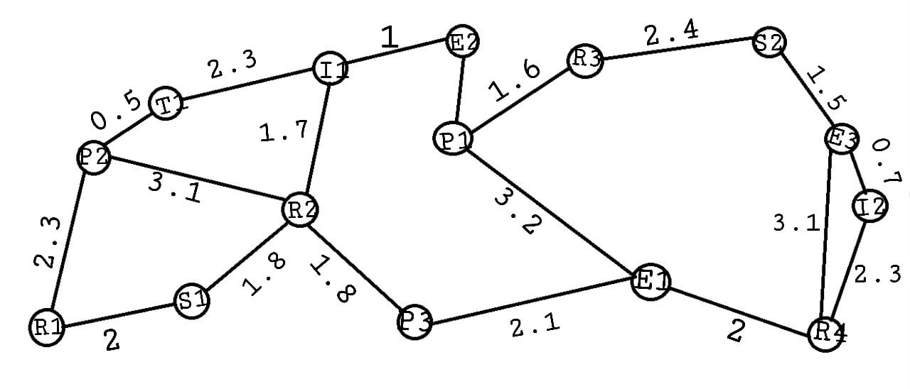

SDG: 11
Target: 11.7
Indicator: 11.7.1
Public Wi-Fi networks are crucial for enabling affordable and widespread internet access in cities, such as parks, healthcare centres, business offices, etc.
1. Hashing: Used to manage user connections and their devices. Passwords of each router have to be safely stored and hashed into a hash table.
Efficiency: Best case for searching, inserting, and deleting in O(1) time, and in the worst case O(n).
2. Dijkstra's Algorithm: Optimizes the route of internet traffic across different access points. Dijkstra’s Algorithm helps find the fastest route for data from a user to the nearest Wi-Fi access point.
Efficiency: The efficiency is O(|E| log|V|), with the graph represented by adjacency lists and a min-heap priority queue.
3. Brute force string search Algorithm: Used for efficiently searching and identifying available Wi-Fi IDs across the network. BFS is ideal for exploring Wi-Fi access points in a breadth-first manner to find the closest, non-occupied access point available for new users.
Efficiency: Efficiency of algorithm is O(mn).
4. Queues: Used for managing the queuing system of users trying to connect. With a Queue, we can ensure that users are serviced in the order they request connections.
5. Merge Sort: Used to sort Wi-Fi access points based on their distance from a user's location. By sorting the access points in ascending order of their distance, Merge Sort helps ensure users are connected to the nearest access point.
Efficiency: Merge Sort has a time complexity of O(n log n).
Click to view related text files:
